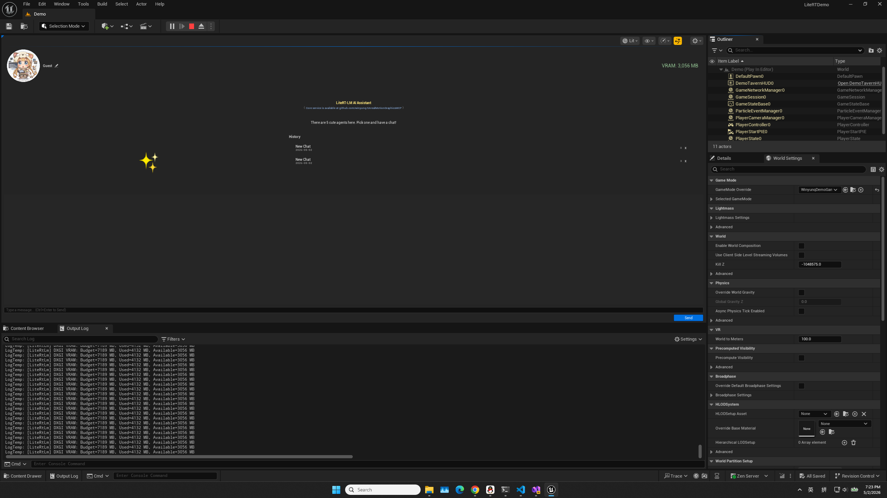

Prepare the project and plugin
Open LiteRTDemo.uproject. If Unreal asks to compile modules, allow it and wait for completion.

Quick Start / Blueprint API
This page replaces the missing video tutorial: verify that the demo runs, then wire model loading, text chat, multimodal input, JSON/Tools requests, and session release into your own Level Blueprint, Widget, or NPC.
Resolve path, model, and VRAM issues first. Blueprint debugging is much easier after that.
The project is currently associated with UE 5.7. If you use another version, regenerate project files and build the Editor target first.
The default model folder is Content/Models. Avoid non-ASCII project paths when possible because the lower layer uses memory mapping.
Auto config queries available VRAM. On low-memory machines, reduce MaxNumTokens or use the cpu backend.
The demo validates plugin loading, model loading, session cache, and streaming UI.
Open LiteRTDemo.uproject. If Unreal asks to compile modules, allow it and wait for completion.
Use the model bundled with the demo, or download the matching LiteRT-LM model from Hugging Face and replace it.
Open Demo.umap and click Play. First load can be slow; later requests reuse the session cache.

Type into the chat box and watch the response stream back chunk by chunk.

The nodes are under LiteRT-LM. Shared DisplayNames are used to give Blueprint a lightweight overload-like workflow.
Event BeginPlay
-> Load LiteRT-LM Model
ModelFileName = "gemma-4-E2B-it.litertlm"
bUseAutoConfig = true
On Send Button Clicked
-> Send LiteRT-LM Chat Request
UserMessage = InputText
SessionOwner = Self
OnChunk: Append Text
OnDone: Enable Send ButtonLiteRtLmComponent
SystemPrompt = "You are a tavern keeper."
SamplingParams.MaxTokens = 256
Bind:
OnTextChunkReceived -> Update subtitle
OnInferenceCompleted -> Store result
Call:
Send LiteRT-LM Chat Message
Send LiteRT-LM Chat Message + Sampling Params| Node | Use | Common inputs |
|---|---|---|
Load LiteRT-LM Model |
Load a model from config, absolute path, or a file name under project Content/Models. |
ModelFileName, bUseAutoConfig, Backend |
Send LiteRT-LM Chat Request |
Send text, system prompt, multimodal paths, or OpenAI-style JSON messages. | UserMessage, SystemPrompt, ImagePath, MessagesJson |
Make LiteRT-LM Sampling Params |
Create request-level temperature, TopP, TopK, max-token, and constrained decoding parameters. | Temperature, MaxTokens, ConstraintType |
Release LiteRT-LM Session |
Clear the session and KV Cache associated with a SessionOwner. | SessionOwner, usually Actor, Widget, or Self. |
Use the JSON chat request node when you need complete history or tool calls.
MessagesJson
[
{
"role": "system",
"content": "You are a concise game NPC."
},
{
"role": "user",
"content": "Give me a tavern keeper greeting."
}
]ToolsJson
[
{
"name": "set_npc_mood",
"description": "Set NPC mood",
"parameters": {
"type": "object",
"properties": {
"mood": { "type": "string" }
}
}
}
]Start here for the most common demo and integration issues.
| Symptom | First check |
|---|---|
| Model load fails | Verify ModelPath points to a real file. Use Resolve LiteRT-LM Model Path to confirm the path. |
| First request is slow | The first call creates the engine, loads weights, and warms the GPU. Load the model on a loading screen. |
| NPCs share memory unexpectedly | Pass a different SessionOwner per NPC. The same object reuses the same session cache. |
| VRAM is low | Use auto config, reduce MaxNumTokens, or switch Backend to cpu. |
| Conversation needs reset | Use ResetConversation on the component, or Release LiteRT-LM Session in the function library. |
After the demo works, continue with the layer-specific docs you need.